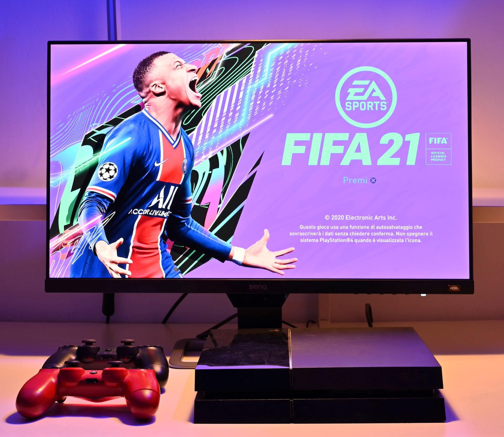
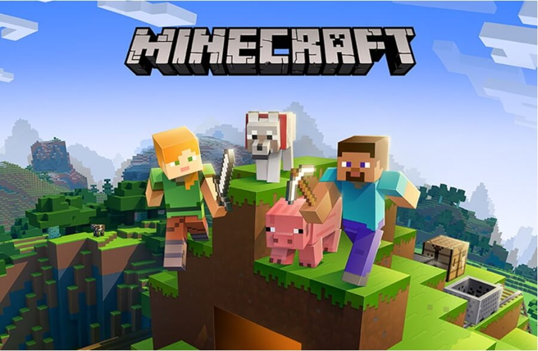

안녕하세요? 오늘은 제가 좋아하는 게임에 대해 알아볼 겁니다. 제가 좋아하는 게임은 로블록스, 마인크래프트, 피파22 등이 있는데요,
피파는 EA의 스포츠 게임 브랜드 EA 스포츠로 내놓는 축구 게임. 1993년 모태가 된 FIFA International Soccer(FIFA 94)가 나온 이래 현재까지 매년 꾸준히 나오고 있는 장수 타이틀이다. NHL 시리즈와 같이 EA 밴쿠버에서 제작한다. FIFA, FIFPro와 라이선스 계약을 체결했으며 외전으로 FIFA 월드컵 시리즈도 존재했다.[1] EA 스포츠의 4번째 게임 시리즈다.[2] 한때는 일부 국가에서 명칭이 달랐다. 미국의 경우엔 'FIFA Soccer'라는 이름으로 나오고, 일본에선 'FIFA 월드 클래스 사커'라는 제목으로 발매한 적도 있었으나, 현재는 전 세계 제목을 통일했다. 2000년대 이전엔 PES 시리즈, 버추어 스트라이커 시리즈, 액추어 사커 등 경쟁작들이 상당수 존재했으나 버추어 스트라이커는 2006년 이후로 개발 중단하는[3] 등 차례로 단종되면서 PES와 양강 체제를 확립했다. 매든 NFL[4]과 함께 EA의 돈줄이다. 포켓몬스터 시리즈, 콜 오브 듀티 시리즈 등과 더불어 세계에서 가장 많이 팔리는 비디오 게임 시리즈 중 하나다.[5] 2010년에 누계 판매량이 1억 장을 돌파하였고, 2018년 9월 기준 시리즈 누계 판매량이 2억 6천만 장으로 공식 발표되었다. 이하 그 시리즈들. 시리즈가 많아 목차가 지나치게 길어진 고로 통합 및 항목 정렬이 되어있다. 기본적으로는 출시 순으로 정렬.

로블록스는 1989년 Mac OS용으로 처음 발표된 교육용 2D 물리 시뮬레이터 프로그램 Interactive Physics # [11]이 그 시초로, Roblox 서비스의 아이디어는 이 프로그램의 성공에 힘입은 바가 크다고 훗날 데이비드는 인터뷰에서 밝혔다. 1990년대 후반 즈음부터 비공개 알파 테스팅이 시작되어[12] 2004년에 DynaBlocks beta라는 이름으로 베타에 들어갔으며, 마지막으로 2006년 즈음 Roblox beta로 이름이 바뀌며 Roblox의 역사가 시작되었다. 정식 발매는 2006년 9월부터였다. 사용자가 직접 콘텐츠를 만드는 방식[13]으로, 롤플레잉 이외에도 FPS, 탈출, 레이싱 등 다양한 유저들이 만든 게임을 플레이할 수 있다.
마인크래프트는 Mojang(모장) 스튜디오에서 2009년 [19]처음 발매한 샌드박스 형식의 비디오 게임. 이름처럼 채광(Mine)과 제작(Craft)을 하는 게임으로 흔히 알려져 있다. 모든 것이 네모난 블록으로 이루어진 세계에서 혼자, 혹은 여럿이 생존하면서 건축, 사냥, 농사, 채집, PvP, 탐험, 회로 설계, 또는 직접 게임을 제작하는 등 정해진 목표 없이 자유롭게 즐길 수 있다. 다시 말해 마인크래프트에는 정해진 목적과 스토리가 사실상 없다. 플레이어가 목적을 스스로 만들어내서 그것을 이루어야 재미를 느낄 수 있는 게임이다. 게임의 목적과 스토리를 중요하게 여기는 플레이어에겐 진입장벽으로 다가올 수 있다. 그나마 외전으로 특별한 목적을 가진 게임들이 제작되어 해소가 가능하긴 하다. 마인크래프트 던전 등. 장기간의 업데이트 이후 추상적으로나마 엔딩이 주어졌지만, 그럼에도 마인크래프트라는 게임은 기본적으로 특별한 목적과 스토리가 없는 것과 마찬가지인 게임이다.
지금까지 제가 좋아하는 게임에 대해 알아보았습니다. 마침. 끝~~!